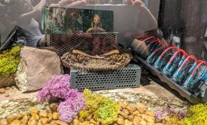
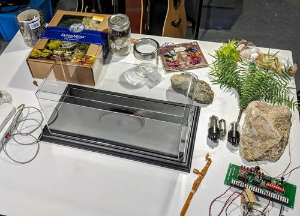
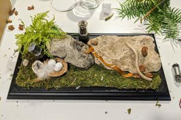
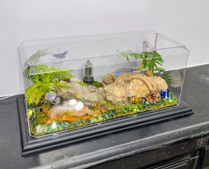

Sometimes inspiration can be a slow, gradual process involving learning and introspection, but sometimes inspiration can hit like a lightning bolt out of nowhere. I was struck with an almost weirdly intense feeling of love, inspiration, and creativity during our recent family vacation to Disney World.

We were at the Avatar area of Animal Kingdom (which, unexpectedly, was astounding!) and I noticed this nondescript, somewhat out of place display in the corner in the gift shop of all places. It didn’t really relate to anything else there but for some strange reason it caught my eye and sucked me in. My attention was overcome by this tiny diorama of natural items like rocks and moss intertwined with manmade technology. It wasn’t even well put together, but it really sparked something in my brain.
My whole life I’ve been in love with Nature; the beauty, the feeling of connectedness, and the serenity it provides. From the elegant grandness to the minute details, the complex harmony is evident at all levels and from every angle. Nature perennially makes me feel truly alive and instills a sense of purpose and reminds me that I’m not alone.
I’ve always been fascinated with science and technology as well, but for different reasons. Discovering how things work, how things are made, and how things came to be fulfills some innate longing inside me. Learning what humans have been able to create by utilizing logic and ingenuity is truly mesmerizing. Technology instills within me a genuine feeling of awe and respect and admiration for human capability, and it never ceases to impress.

These two concepts, Nature and Technology, have always played opposing rolls in my mind; they were almost contradicting ideas. One was natural and clean while the other was artificial and un-pure. One was spiritually stimulating while the other sterilely intellectual. Both amazing in their own right, but they simply served different purposes.
Maybe it’s because of a recent shift in my thinking, but when I saw these two dichotomies merged into a single coherent notion, something clicked. For the longest time I firmly believed that there were certain static truths – facts that were true whether you believed in them or not. And then there were fictional stories humans told like money and religion, for example. These stories were based on a certain level of truth, but ultimately un-real.
But my perspective has taken a turn recently. I’m beginning to alter my view and have become much more open-minded about reality. While I still technically hold the same beliefs as before, this new understanding of reality is simply on a different level. Without going into detail, I now believe there can be many truths on many different levels. This new “unbounding” provides opportunities for new possibilities – and connections.

I can now see and accept these two previously opposing ideas as things that can be blended. And when differences converge, new and interesting things occur! For example, the open ocean is a majestic sight full of power and grandeur, and the desert is a place of magnificent desolation – both individually awesome. But put them together and you get a beach or coastline – a place of unparalleled dynamic diversity. It’s at the edges where the most interesting things appear.
With a new outlook and full of inspiration, I wanted to recreate this microcosm for myself. I needed an outlet for this sudden urge of creativity, and I wanted to make a symbol for this new frame of mind, so I made one! I used fossils and rocks and shells I’ve collected over the years along with whatever leftover electronics I had laying around. The display case and artificial plant life I picked up from a local hobby store. I spent a couple days or so tinkering around with aesthetically-pleasing placement options and even added some string LED lights… just because it looked cool!

I think it looks nice on the mantel in our dining room – which I’ve been stealthy converting into a low-key Natural Science Museum, unbeknownst to my wife. (Who am I kidding? She knows, ha!) And the LEDs work nicely as a nightlight at night. I tried to hide as many little ‘Easter eggs’ as possible to make the scene a little more fun to study and inspect, not unlike a fish tank or aquarium.
Ultimately, I’m happy with how it turned out. It’s fun to look at and an interesting conversation piece, but what it represents is what’s most meaningful to me. It represents a melding of fact and fiction; truth and emotion; mind and heart. I feel good about this new perspective on life, meaning, truth, and purpose. My old view felt so limiting and almost negative while this new perspective feels so much more inviting and optimistic! Is it correct? Is it “true?” What’s true anyway? I’m sure my outlook will eventually change (change is the only constant in life), but for me right now, it just feels right.